Sobre Nós
Tudo começou com a minha própria caminhada: eu, Jaqueline, era casada e tinha um filho pequeno quando me separei. Na época, não tinha outra forma de me sustentar, mas tinha um pula-pula no meu quintal — e foi assim que comecei a alugá-lo para sobreviver.
Moro no Largo da Batalha, uma região mais comercial do centro, mas com o trabalho fui passando a frequentar mais as comunidades carentes. Quando consegui comprar um inflável, vi de perto a alegria que isso trazia às crianças — e também percebi o quanto elas precisavam de um pouco mais de felicidade. Comecei fazendo uma festa no Dia das Crianças, depois achei pouco e fiz a do Natal, depois a da Páscoa... E cada vez mais sentia que podia fazer mais.
Foi então que decidi juntar um grupo de amigas: algumas trabalham com decoração, outras fazem bolos e doces, outras com animação. E assim surgiu a Câmara Comunitária de Mulheres do Largo da Batalha.
Mas logo senti que precisávamos ir além de levar alegria — queria também dar oportunidade. Sempre acreditei que não basta dar o peixe: temos que ensinar a pescar. Por isso, criamos projetos de qualificação para as mães: com amigas que sabem trançar cabelo, fazer massagem, artesanato, culinária, oferecemos aulas livres e workshops gratuitos. Também lançamos o projeto “Nunca é Tarde para Aprender”, de alfabetização para adultos, e o “Encontro com a Cultura”, que leva crianças carentes para passeios socioculturais — teatro, cinema, museus — além de realizarmos o Varal Solidário.
No começo, tudo era feito apenas com amor, coração e muita emoção. Depois, buscamos profissionalizar um pouco mais o trabalho, com um objetivo simples: se não conseguíssemos mudar o mundo, o estado ou a cidade, ao menos queríamos fazer a diferença no nosso bairro. Mas o bem que fazemos acabou se espalhando: já atuamos em São Gonçalo, em Maricá... E com a graça de Deus, podemos chegar a outras cidades do Rio de Janeiro, quem sabe até a outros estados ou países — isso pertence a Ele.
E o mais bonito de tudo: até hoje, fazemos todo esse trabalho sem nenhuma ajuda de políticos ou empresas. É apenas um grupo de amigas que ama de verdade fazer o bem ao próximo.
Nossos Cursos
Estética
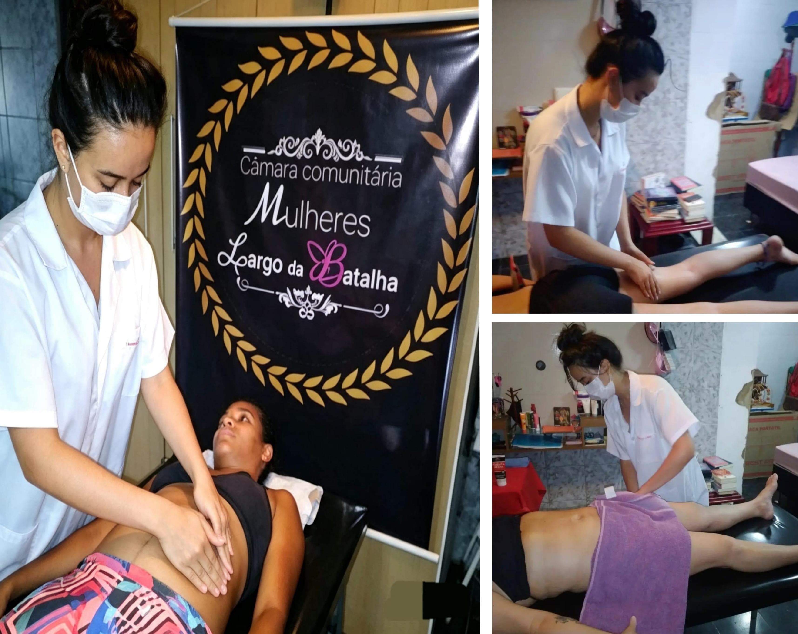
Drenagem Linfática
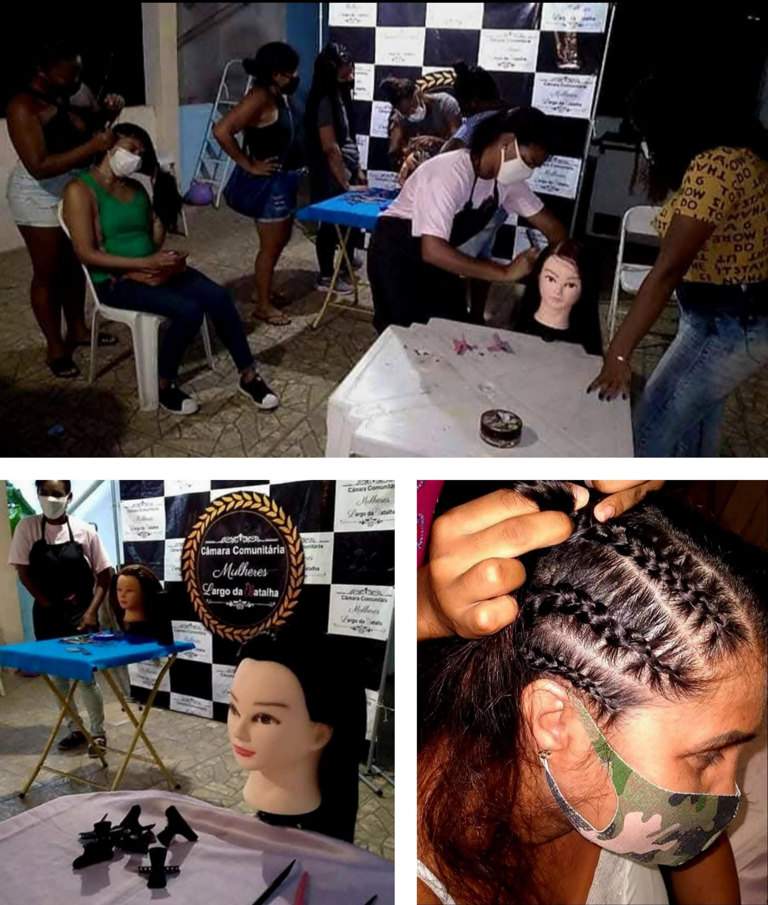
Tranças
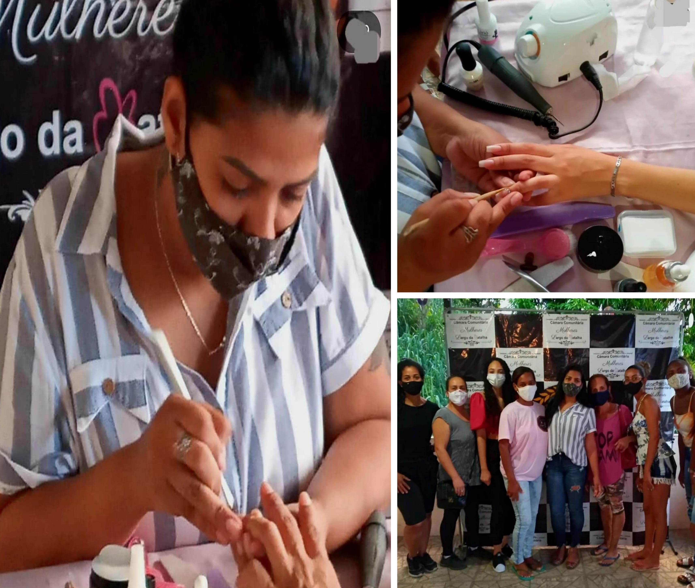
Unhas
Empreendedorismo
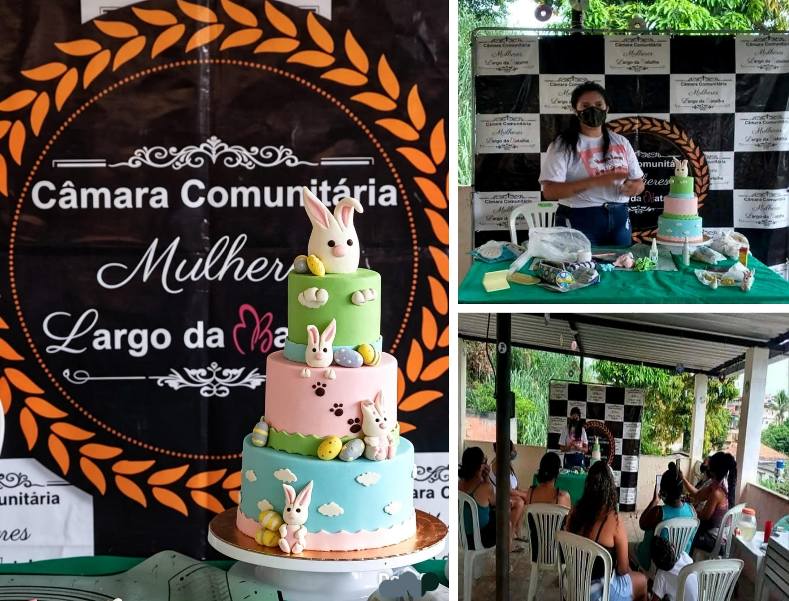
Bolo Fake
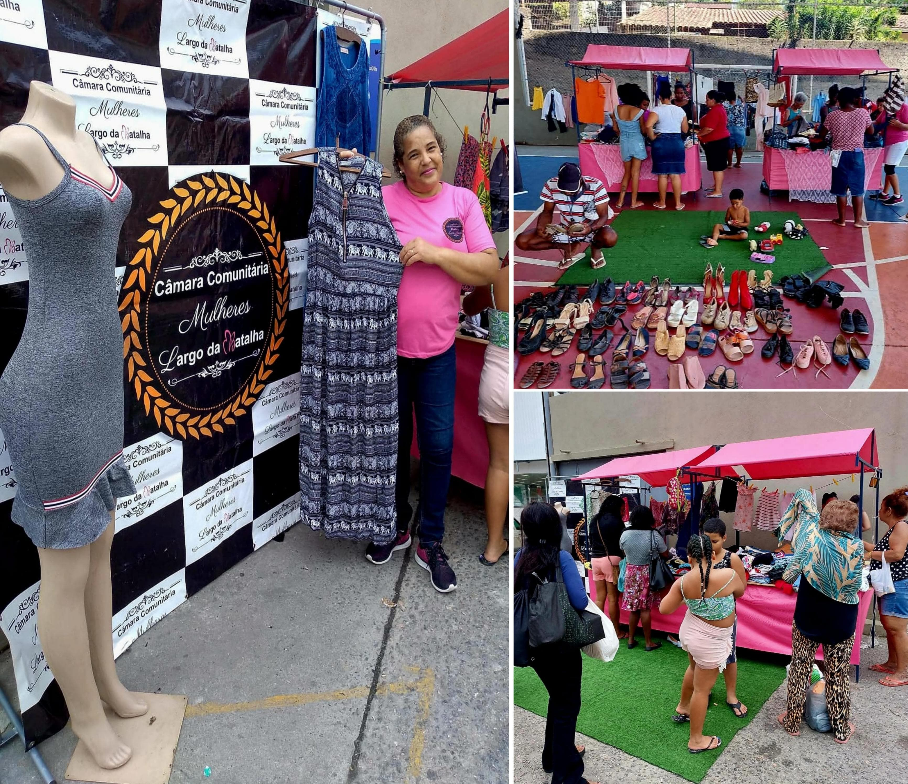
Varal Solidário
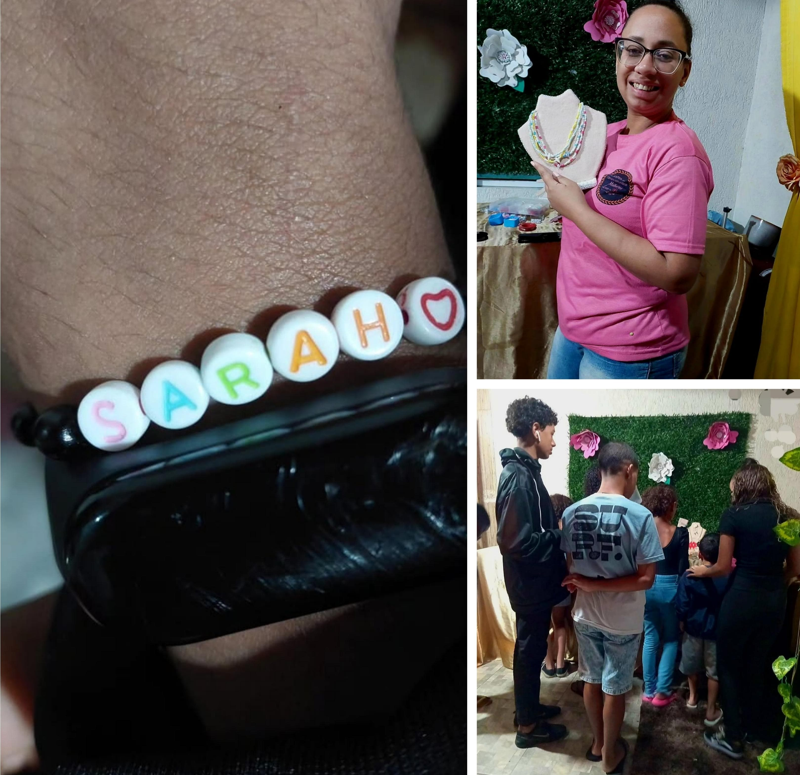
Bijoteiras
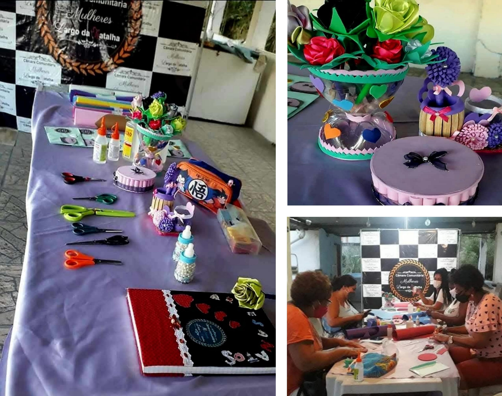
Artesanato
Doces e Salgados
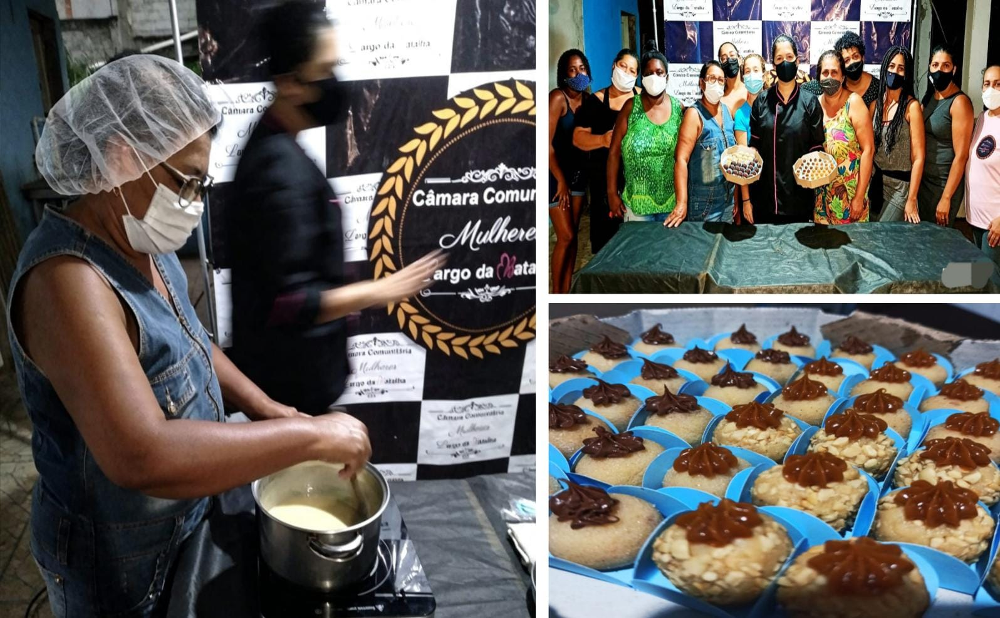
Doces Gourmet
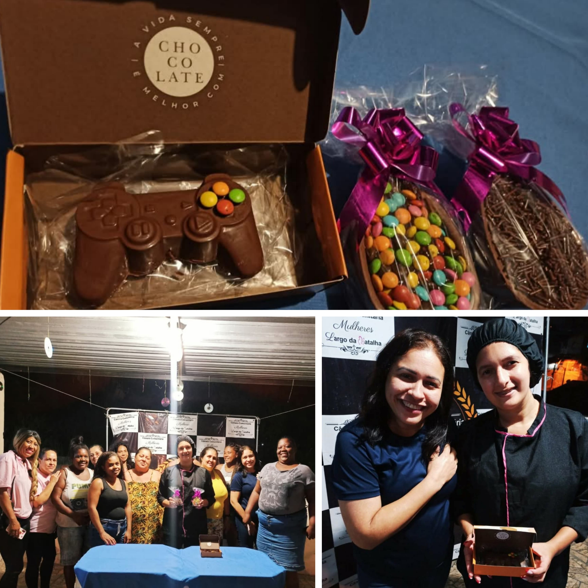
Chocolate para Páscoa
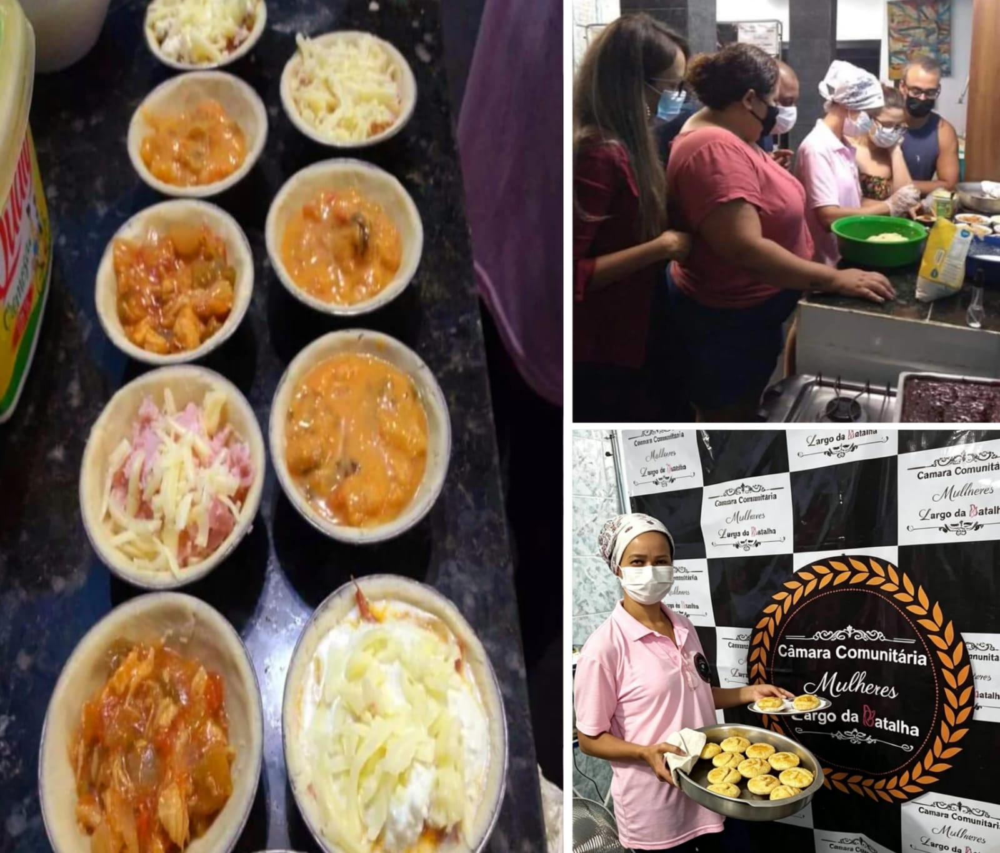
Salgados de Forno
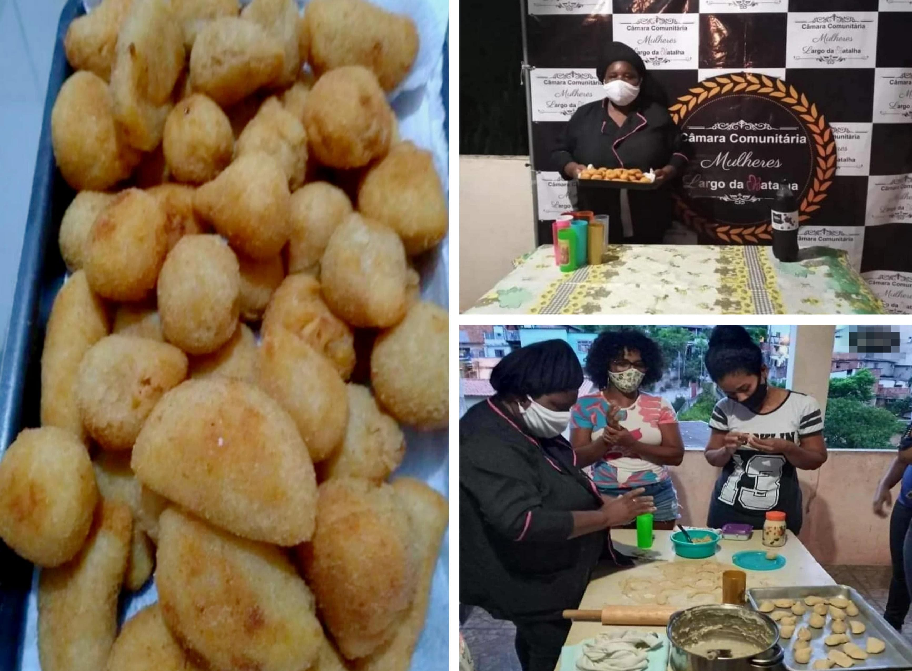